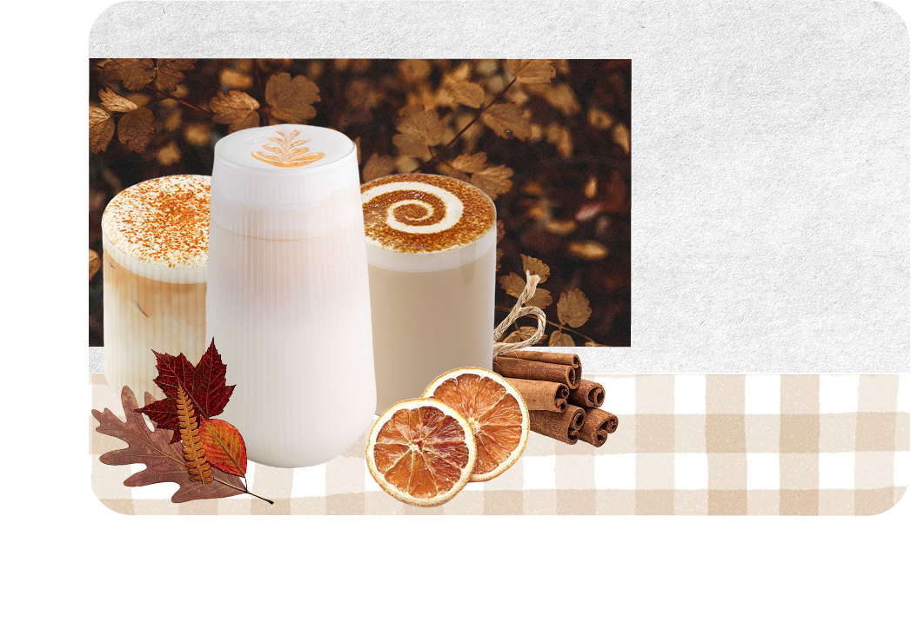

О нас

Наше кафе — это не просто место, где можно вкусно поесть. Это портал в старый Ленинград, где время замедляет свой бег. Здесь всё по-настоящему: тот самый вкус воздушных пышек, который помнят бабушки и дедушки, звон фарфоровых кружек, аромат свежесваренного кофе и доброжелательные лица за прилавком. Мы бережно храним рецепт, который стал легендой: пышка должна быть нежной, чуть влажной внутри, с характерной дырочкой посередине и обязательно в сахарной пудре. Никаких пончиков! Только пышки — символ ушедшей, но такой живой эпохи.